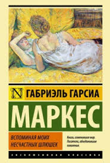

Габриэль Гарсиа Маркес "Вспоминая моих несчастных шлюшек"
"Наконец-то настала истинная жизнь и сердце мое спасено, оно умрет лишь от великой любви в счастливой агонии в один прекрасный день, после того как я проживу сто лет"
Впервые я познакомилась с этим автором около года назад, и должна признаться тогда он мне показался довольно мрачным, сравнимым по стилю изложения с Палаником. Кто читал Паланика, тот поймет о чем я пишу.
Но прочитав эту книгу, я открыла для себя нового Маркеса, чувственного, изобретательного и трогательного до глубины души. Эта история потрясла меня, и не смотря на столь вульгарное название, эта книга достойна внимания. В ней нет той пошлости и разврата, которого ждешь от названия.
Это история о мужчине, который лишь на закате своих лет испытал прежде ему незнакомое чувство под названием любовь.